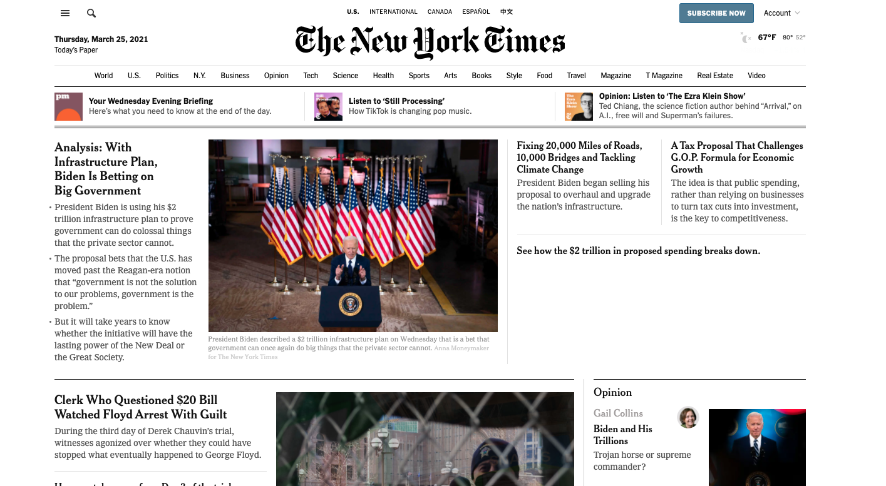
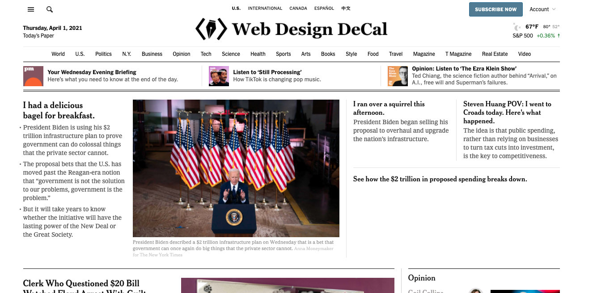

Welcome to the Inspect Element and JavaScript console lab!
Inspect element is super helpful for debugging in web development, so we'll be focusing on solidifying our inspect element skills in this lab!
Overview
Today, we'll spend some time working with the Chrome developer tools. We've designed this lab with your final projects in mind, as we're sure that the features we use today will come in handy over the next few weeks.
Inside the "lab7-starter" folder, please create an index.html file and include all your answers (both text and images) on that single file. As usual, you'll submit your files through Github. No need to worry about styling, but please number your answers.
Part 1: Fake News
Your goal for this section is to tinker around on the New York Times website and change a few things to make it your own.

- First, open up the "Inspect" panel in your browser (right click -> "Inspect") and scroll through the contents in the "Console" tab. It should say that the New York Times is hiring. What is the link to their website where the New York Times is listing their open positions?
- Next, let's dig around and take a look at their styling. What font does the New York Times use for their headings?
- Now, let's switch over to the "Elements" tab in "Inspect". Change three of their headlines to three things that happened to you today.
- Finally, take a screenshot of your browser and put it in your code submission. It should look something like this (with your own headlines, the logo should still say "The New York Times").

And that's it for Part 1!
Part 2: Magic Number
- In your "Inspect" panel within your browser, click into the "Console" tab and into the field where you can enter code.
- Define a variable called
xand assign it any integer value you want. Enter this line of code into the console and press enter. - Let's multiply this number by 3. Assign this to a new variable called
y. Type this line of code into the console as well. - Next, we will add 6 to
y. Then, divideyby 3. - Subtract the number
xthat you initially had from the variableyand assign it to the variablemagicNum. Now print out this final magic number by usingconsole.log(). - Define a new variable called
magicWordand assign it the value of the string with your name concatenated with the magic number. Print out this string in the console as well. - Finally, take a screenshot of your console with all your code and output displayed and upload it to your code submission.
Submission
Submit your files to your GitHub Submission Repository by copying all the files inside the "lab7-starter" folder into the lab7 folder of your submission repository (replace the index.html originally in it). In your terminal, from your GitHub Submission Repository, run the following Git commands:
- git add -A
- git commit -m 'finished lab7'
- git push
This assignment is due Monday, April 15th at 7:00PM PDT.